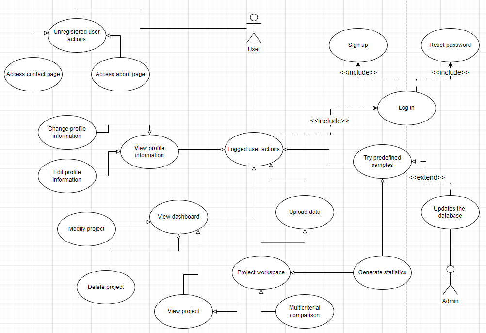

Autori
- Cobaschi Emanuel Aser Universitatea "Alexandru Ioan Cuza" Iasi,
- Martinescu Nicoalae Universitatea "Alexandru Ioan Cuza" Iasi,
- Nastasiu Stefan Universitatea "Alexandru Ioan Cuza" Iasi,
Afiliati
- Facultatea de Informatica, Universitatea "Alexandru Ioan Cuza" Iasi" — Iasi, Judetul Iasi, Romania
Abstract
In ultima perioada, cererea pentru aplicatii de orice fel legate de vizualizarea si analiza datelor a crescut semnificativ. In acest sens, am realizat o aplicatie web care sa ofere o interfata grafica pentru vizualizarea si analiza datelor, in special din domeniul auto. Aplicatia utilizeaza tehnologii de baza precum HTML, CSS, JavaScript, PHP si MySQL, dar si biblioteci moderne folosite pentru vizualizarea datelor cum ar fi D3.js. Aplicatia nu foloseste niciun framework, scopul fiind de a demonstra cunostintele noastre in domeniul web development.
Introducere
Vizualizarea si analiza datelor este o cerinta tot mai des intalnita in randul entitatilor care apeleaza la servicii software. Ca raspuns la aceasta tendinta, echipa noastra, ANS-TheGradeSlayers, a carei componenta este detaliata in sectiunea "Autori", lanseaza o aplicatie web, denumita "Auto Park Smart Explorer" - o aplicatie web pentru vizualizarea si analiza datelor in special din domeniul auto. Motivatia noastra este aceea de a veni pe piata cu un produs bun, sigur, usor de folosit, si care sa vina atat in sprijinul companiilor ce activeaza in domeniul mentionat anterior (companii de stat, fie private), si care au nevoie de un studiu al pietei auto din Romania ultimilor 10 ani(folosind baze de date puse la dispozitie de Registrul Auto Roman), cat si in sprijinul persoanelor interesate de acest domeniu si evolutia lui in timp. Documentatia de fata are rolul de a facilita interactiunea utilizatorilor cu aplicatia in sine. Astfel, este detaliat modul in care trebuie pregatita masina locala si pasii premergatori rularii aplicatiei. De asemeena, sunt oferite detalii privitoare la implementarea aplicatiei si modul in care aceasta functioneaza, atat la nivel textual cat si la nivel vizual, prin diagrame de tip use-case. Ne dorim ca produsul nostru sa fie scalabil si eficeint, prin urmare raportul final va contine si o rubrica in care sunt consemnate rezultate obtinute in urma unor teste semnificative in privinta aceasta. Ne dorim de asemenea ca aplicatia noastra sa fie una sigura pentru utilizatori, motiv pentru care documentul de fata contine o sectiune in care sunt precizate si cateva obiective in privinta aceasta.Scenariile principale de folosire a aplicatiei sunt crearea contului, logarea, crearea proiectelor noi prin importarea unor date, vizualizarea statisticilor generate pe baza proiectelor, si exportarea acestora in diferite formate. Modul in care un utilizator poate face aceste lucruri este detaliat explicit in sectiunea de Fronted, acesta fiind stadiul actual al proiectului, interfata fiind realizata.Urmeaza sa se aduca unele imbunatatiri partii de interactiune cu utilizatorul si sa se implementeze logica din Backend. Tehnologiile folosite pana acum sunt HTML, CSS si JavaScript, evitandu-se utilizarea framework-urilor. Nu in ultimul rand, documentul de fata contine bibliografia de care ne-am folosit in realizarea proiectului.
Design & Scenarii de utilizare
Principalele scenarii de utilizare ale aplicatiei noastre sunt surprinse in urmatoare diagrama de tip Use-Case: 
Plan de instalare si setup
Pentru a putea rula aplicatia pe masina locala este necesar sa parcurgeti urmatorii pasi in ordinea precizata:
- Instalati XAMPP de la link-ul click here si aveti grija sa fie salvat direct in disk-ul C, nu in vreun alt fisier. De obicei, este setat sa se salveze automat la adresa "C:\xampp" , dar totusi aveti grija la acest aspect.
- In fisierul de la adresa "C/xampp/htdocs" faceti un "git clone" https://github.com/Stefcool8/Proiect_Web_ANS , pentru a salva local proiectul.
- Deschideti fisierul text de la adresa "xampp/apache/conf/httpd". Cautati "DocumentRoot" (folosind ctrl+f) si schimbati-i adresa cu "C:/xampp/htdocs/Proiect_Web_ANS/public", trebuie schimbat inapoi la valoarea default dupa.
- Acum, deschideti un browser (de preferat nu Edge) si accesati "localhost". Ar trebui ca acum sa aveti acces la proiectul nostru, si sa interactionati cu interfata noastra.
Implementarea
Frontend
Frontend-ul aplicatiei este realizat in HTML, CSS si JavaScript.
Pagina "Home"
Pagina "Home" este pagina principala a aplicatiei. Aceasta contine un meniu de navigare, continutul propriu-zis al paginii si un footer.
Meniu de navigare
Meniul de navigare este o componenta comuna tuturor paginilor aplicatiei, din acest motiv ea va fi explicata doar aici,restul paginilor urmand sa treaca direct la explicarea continutului paginii. Meniul de navigare este realizat in HTML si CSS, aceasta contine un logo in partea stanga, momentan nu exista un logo concret pentru aplicatie, in locul ei fiind o imagine de test. In partea dreapta se afla un meniu cu diferite link-uri catre alte pagini ale aplicatiei, dupa cum urmeaza:
- Link-ul "Home" - duce catre pagina curenta.
- Link-ul"About" - duce catre pagina unde se afla mai multe detalii despre aplicatie si autori.
- Link-ul "Contact" - duce catre pagina unde se afla un formular de contact pentru a putea trimite mesaje catre administratorii aplicatiei.
- Link-ul "Use Feature" - care duce catre dashboard-ul aplicatiei in cazul in care utilizatorul este logat, iar in cazul in care nu este logat, acesta va fi redirectionat catre pagina de login. Momentan, acest link redirectioneaza catre pagina de login, deoarece inca nu a fost implementat un mecanism de autentificare.
Continut
Continutul paginii este impartita in 3 zone principale: zona de informatii, zona legata de use-case-uri principale si zona de prezentare.
Zona de informatii
Zona de informatii este impartita in doua: partea stanga contine scopul principal al aplicatiei si doua butoane:
- "Use it now", care are acelasi efect ca si "Use feature" din meniul de navigare.
- "Github", care duce catre repository-ul de Github al proiectului.
Zona legata de use-case-uri principale
Zona legata de use-case-uri principale contine principalele 3 use-case-uri ale aplicatiei: vizualizarea datelor, manipularea datelor si impartasirea datelor.
Zona de prezentare
Zona de prezentare contine un slide-show cu imagini ale aplicatiei, aceste poze momentan nu exista, in locul lor sunt puse doua imagini de testare care se schimba automat la fiecare 3 secunde.
Footer
Footer-ul este o componenta comuna tuturor paginilor aplicatiei, din acest motiv ea va fi explicata doar aici, la fel ca si meniul de navigare, restul paginilor detaliind doar continutul specific al lor. Footer-ul este realizat in HTML si CSS. Acesta contine 3 sectiuni de informatii.
In partea stanga se regasesc 3 link-uri, cate unul pentru urmatoarele pagini:
- "Termenii serviciilor", unde sunt detaliati termenii si conditiile utilizarii aplicatiei noastre, sectiune ce este recomandata a fi citita inainte de folosirea explicita a serviciilor oferite de noi. La momentul actual, termenii si conditiile nu sunt detaliate, link-ul trimitand la pagina curenta.
- "Politica de confidentialitate" contine informatii legate de protectia datelor dumneavoastra, noi garantand faputl ca nu vom folosi datele introduse de dumneavoastra documentation in scopul folosirii aplicatiei, fiind excluse orice furnizare de date pentru alte entitati. La momentul actual, politica de confidentialitate nu este complet definita, link-ul trimitand la pagina curenta.
- "Harta site-ului", care trimite catre principalele pagini si functionalitati din cadrul aplicatiei. De asemenea, la momentul actual link-ul trimite la pagina curenta.
In partea de mijloc, se regasesc informatii de contact precum:
- Adresa de email a administratorilor aplicatiei.
- Numarul de telefon al administratorilor aplicatiei.
- Un link catre pagina de github a aplicatiei.
In partea de dreapta, se regasesc linkuri catre paginile noastre de pe retele sociale precum:
Pagina "About us"
Pagina "About us" este pagina aplicatiei care descrie atat componenta echipei, motivatia din spatele aplicatiei, scopul acesteia, cat si detalierea muncii depuse de fiecare membru al echipei. Aceasta pagina contine meniul de navigare, continutul propriu-zis al paginii si footer-ul, primul si ultimul element enumerat aici fiind specifice fiecarei pagini ale aplicatiei.
Continut
Continutul paginii este impartita in 3 zone principale: zona de titlu, zona de informatii si zona de prezentare a muncii fiecarui membru.
Zona de titlu
Zona de titlu este compusa dintr-un background atractiv si denumirea explicita a paginii, "About us".
Zona de informatii
Zona de informatii contine detalierea componentei echipei, fiecare membru fiind nominalizat. De asemenea, este detaliat contextul si motivatia crearii acestei aplicatii.Nu lipsesc nici detaliile despre scopurile ce pot fi atinse utilizand aplicatia, ca rezultat al muncii colective a echipei noastre.Pentru a vizualiza toate aceste informatii, utilizatorul trebuie sa apese pe butonul "Read more" disponibil in josul acestei sectiuni, el avand oricand oportunitatea de a alege cantitatea de informatie afisata.
Zona de prezentare a contributiei fiecarui membru
Zona de prezentare a contributiei fiecarui membru este alcatuita din 3 sectiuni: cea din stanga, detaliaza contributia lui Nicolae; zona din mijloc detaliaza contributia lui Stefan; iar utlima zona, cea din dreapta, detaliaza contributia lui Aser. Pentru vizualizarea acestor informatii, utilizator are, de asemenea, posibilitatea de a alege cantitatea de informatie afisata, cu ajutorul butoanelor "Read more" si "Read less". La momentul actual, textele puse sunt doar pentru a exemplifica utilizarea acestei zone, munca nefiind inca finalizata, contributiile complete ale fiecarui membru al echipei fiind evidentiate la final.
Pagina "Dashboard"
Pagina "Dashboard"(accesata localhost/dashboard) este pagina aplicatiei care permite vizualizarea de ansamblu a proiectelor utilizatorului curent, dar si accesarea profilului utilizatorului cat si initierea crearii unui proiect nou. Tinand cont de caracterul personalizat al acestei pagini, in functie de utilizator, accesul se poate face apasand butonul "Use Feature", numai in cazul in care utilizatorul este logat, in caz contrar acesta fiind redirectionat catre pagina de logare.Deoarece inca nu a fost implementat un mecanism de autentificare, accesul catre pagina Dashboard se poate face accesand "http://localhost/dashboard". Aceasta pagina contine meniul de navigare, continutul propriu-zis al paginii si footer-ul, primul si ultimul element enumerat aici fiind specifice fiecarei pagini ale aplicatiei.
Continut
Continutul paginii este impartita in 2 zone principale: zona de titlu, zona de proiecte.
Zona de titlu
Zona de titlu este compusa dintr-un background atractiv si descrierea explicita a ceea ce urmeaza sa vizualizam in zona urmatoare, si anume "List of projects". De asemenea, dedesubtul titlului exista doua butoane: cel din stanga, denumit "View Profile" trimite catre pagina "Profile" a utilizatorului curent, iar cel din dreapta, denumit "Create new project", trimite catre pagina "Upload", unde este posibila crearea unui nou proiect.
Zona de proiecte
Zona de proiecte contine, la momentul actual, o vizualizare de ansamblu a tuturor proiectelor utilizatorului curent, sub forma unei liste de entitati dreptunghiulare. Fiecare din aceasta entitate are situat central numele proiectului pe care il reprezinta, iar in subsol cate 3 butoane, ce reprezinta link-uri ilustrative pentru operatii ce se pot face cu respectivul proiect, si anume:
- "View" - care permite vizualizarea proiectului curent.
- "Modify" - care permite editarea proiectului curent. Pagina nu este implementata
- "Delete" - care permite stergerea proiectului curent. Momentan, aceste link-uri sunt inactive.
Pagina "Contact us"
Pagina "Contact us" este pagina aplicatiei care ilustreaza un formular de contact prin care utilizatorul poate transmite un anumit mesaj echipei de administrare a aplicatiei. Aceasta pagina contine meniul de navigare, continutul propriu-zis al paginii si footer-ul, primul si ultimul element enumerat aici fiind specifice fiecarei pagini ale aplicatiei.
Continut
Continutul paginii este alcatuit dintr-o singura zona, si anume zona de formular de contact.
Zona de formular este compusa dintr-un background discret si formularul propriu zis, in
care utilizatorul trebuie sa completeze 4 campuri obligatorii, dupa cum urmeaza:
Zona de formular de contact
Pagina "Login"
Pagina "Login" este pagina aplicatiei care ilustreaza un formular de logare in aplicatie, prin care un utilizator deja inregistrat poate intra in contul sau din aplicatie. Totusi, daca se incearca conectarea unui utilizator neinregistrat in aplicatie, acesta are parte de suport, avand posibilitatea de a accesa din cadrul formularului pagina de inregistrare, unde isi poate creea un cont nou, sau de a accesa pagina de reamintire a prolei sale, unde va parcurge pasii necesari pentru a-si afla propria parola. Aceasta pagina contine meniul de navigare, continutul propriu-zis al paginii si footer-ul, primul si ultimul element enumerat aici fiind specifice fiecarei pagini ale aplicatiei.
Continut
Continutul paginii este alcatuit dintr-o singura zona, si anume zona de formular de
inregistrare.
Zona formularului de autentificare este compusa dintr-un background discret si
formularul propriu zis, in care utilizatorul trebuie sa completeze 2 campuri
obligatorii:
Zona formularului de autentificare
Accesul in contul din aplicatie este realizat doar daca combinatie username-password
introdusa este aferenta unui cont de utilizator existent.In caz contrar, accesul nu este
permis, iar utilizatorul este indrumat cu ajutorul unor intrebari, pentru a sti
cum trebuie sa finalizeze cu bine autentificarea. Astfel, intrebarea "Don't have an
account?" este urmata de un link catre pagina "Sing up", unde utilizatorul neinregistrat isi
poate creea un cont. Intrebarea "Forgot
your password?" este urmata de un link catre pagina "Reset password", unde utilizatorul care
nu isi mai aminteste parola poate sa o afle.Totusi, la momentul actual, daca te logghezi cu
credentiale la intamplare dar
care respecta formatul si doreste sa se logheze, este redirection pe pagina "Dashboard".
Pagina "Sign up"
Pagina "Sign up" este pagina aplicatiei care ilustreaza un formular de inregistrare in aplicatie, prin care un utilizator neinregistrat isi poate crea un cont pentru aplicatie. Totusi, daca se incearca inregistrarea unui utilizator care are deja un cont in aplicatie, acesta are parte de suport, avand posibilitatea de a accesa din cadrul formularului pagina de autentificare, de unde isi poate accesa contul. Aceasta pagina contine meniul de navigare, continutul propriu-zis al paginii si footer-ul, primul si ultimul element enumerat aici fiind specifice fiecarei pagini ale aplicatiei.
Continut
Continutul paginii este alcatuit dintr-o singura zona, si anume zona de formular de
inregistrare.
Zona formularului de inregistrare este compusa dintr-un background discret si formularul
propriu zis, in care utilizatorul trebuie sa completeze 4 campuri obligatorii:
Zona de fromular de inregistrare
Daca adresa de e-mail introdusa nu este deja in baza de date a datelor utilizatorilor
inregistrati, iar celelalte campuri sunt completate corespunzator, atunci noul cont este
creat cu succes iar utilizatorul este redirectionat catre pagina "Login", pentru
a putea intra in aplicatie.In caz contrar, contul nou nu este creat, iar utilizatorul are
parte de suport, printr-o intrebare aflata in subsolul formularului. Astfel, intrebarea
"Already have an account?" este urmata
de un link care conduce utilizatorul deja inregistrat catre pagina "Login", de unde poate
intra in contul sau din aplicatie.
Pagina "Reset password"
Pagina "Reset password" este pagina aplicatiei care faciliteaza resetarea parolei unui utilizator inregistrat deja. Totodata, acesta mai are posibilitatea sa se autentifice in aplicatie, in cazul in care isi aminteste parola contului sau. Aceasta pagina contine meniul de navigare, continutul propriu-zis al paginii si footer-ul, primul si ultimul element enumerat aici fiind specifice fiecarei pagini ale aplicatiei.
Continut
Continutul paginii este alcatuit dintr-o singura zona, si anume zona formularului de
resetare a parolei.
Zona formularului de resetare a parolei este compusa dintr-un background discret si
formularul propriu zis, in care utilizatorul trebuie sa completeze un singur camp
obligatoriu:
Zona formularului de resetare a parolei
Daca adresa de e-mail se afla in baza de date a aplicatiei, atunci utilizatorul este
redirectionat catre o pagina cu un mesaj de confirmare a trimiterii link-ului cu succes.In
caz contrar, se asteapta introducerea unei adrese de e-mail valide sau schimbarea
paginii din meniul aplicatiei.
Pagina "User profile"
Pagina "User profile" este pagina aplicatiei care permite vizualizarea datelor personale asociate contului unui utilizator inregistrat. Totodata, utilizatorul are posibilitatea sa editeze aceste informatii si sa le salveze. Aceasta pagina contine meniul de navigare, continutul propriu-zis al paginii si footer-ul, primul si ultimul element enumerat aici fiind specifice fiecarei pagini ale aplicatiei.
Continut
Continutul paginii este alcatuit din 3 zone, si anume: o zona cu banner-ul utilizatorului, o
zona cu imaginea de profil si butoanele de control si o zona cu un formular ce contine
datele personale ale contului asociat.
Zona banner-ului este compusa dintr-o imagine atractiva, care poate fi aleasa de
utilizator si care intra in contact cu zona urmatoare.
Partea stanga a zonei este compusa dintr-o imagine circulara, care reprezinta un
utilizator si care poate fi schimbata dupa bunul plac.De asemenea, in dreapta imaginii
de profil se gasesc numele de utilizator si adresa sa de e-mail. Partea dreapta a zonei
este compusa din doua butoane de control dispuse orizontal:
Zona banner-ului utilizatorului
Zona imaginii de profil si a butoanelor de control
Zona formularului cu date personale
Zona aceasta cuprinde 6 campuri unde pot fi introduse date, dupa cum urmeaza:
- "First name" - caseta pentru prenumele utilizatorului;
- "Last name" - caseta pentru numele de familie al utilizatorului
- "Username" - caseta pentru numele de utilizator
- "Email - caseta pentru adresa de e-mail a utilizatorului
- "Contry" - caseta in care utilizatorul poate alege tara de provenienta dintr-o multime de tari predefinite.
- "Bio" - caseta pentru informatii aditionale despre utilizator
Pagina "Upload"
Pagina "Upload" (accesata localhost/upload) este pagina aplicatiei care permite crearea unui nou proiect, utilizatorul avand 4 optiuni pentru importarea datelor ce urmeaza a fi prelucrate.Aceasta pagina contine meniul de navigare, continutul propriu-zis al paginii si footer-ul, primul si ultimul element enumerat aici fiind specifice fiecarei pagini ale aplicatiei.
Continut
Continutul paginii este alcatuit din 2 zone, si anume: o zona cu butoanele de control, in
partea stanga si o zona de facilitare a incarcarii datelor, in partea dreapta.
Zona butoanelor cuprinde 4 optiuni diferite de importare a datelor, dupa cum urmeaza:
Zona butoanelor de control
Zona facilitarii importarii datelor
Aceasta zona dreptunghiulara are un comportament diferit in functie de butonul de control selectat, dupa cum urmeaza:
- Pentru butonul "Paste" selectat, zona permite introducerea unui text ce urmeaza a fi parsat
- Pentru butonul "Upload" selectat, zona va deschide o fereastra ce permite fie navigarea printre documentele de pe masina locala si selectarea acestora, fie tragerea si plasarea fisierelor, prin intermediul cursorului
- Pentru butonul "URL" selectat, zona permite introducerea unui link catre datele de importat
- Pentru butonul "Try our samples" selectat, zona permite incarcarea unor date predefinite in aplicatie
Pagina "Project"
Pagina "Project" este pagina aplicatiei care permite vizualizarea unui proiect, utilizatorul avand 4 optiuni pentru vizualizarea datelor: 3 metode de tip diagrame si una corelata cu harta Romaniei, in care prin mutarea cursorului pe un anumit judet, se pot vizualiza statisticile atribuite acestuia.Aceasta pagina contine meniul de navigare, continutul propriu-zis al paginii si footer-ul, primul si ultimul element enumerat aici fiind specifice fiecarei pagini ale aplicatiei.
Continut
Continutul paginii este alcatuit din 2 zone, si anume: o zona ce contine informatii despre
proiectul vizualizat, impreuna cu 6 butoane de control, si o zona ce contine vizualizarea
propriu-zisa a datelor, statisticilor si a diagramelor asociate proiectului
curent.
In partea de sus a acestei zone se afla informatii generale despre proiectul curent, si
anume:
Zona informatiilor despre proiect si a butoanelor de control
In partea de jos a acestei zone se afla cele 6 butoane de control(4 dintre ele oferind
modalitati de exportare), dispuse orizontal, dupa cum urmeaza:
Zona vizualizarii propriu-zise
Aceasta zona contine reprezentarile sub forma de diagrame a statisticilor generate in proiectul curent.Pentru moment, avem o singura varianta implementata, si anume vizualizarea sub forma de bare a caror inaltime e direct proportionala cu numaru de elemente corespunzatoare.
Backend
Cerinte de securitate
Sistemul aplicatiei noastre va stoca parolele criptate, va genera un token pentru securizarea sesiunii si va proteja baza de date impotriva atacurilor de tip "SQL injection" prin sanitizarea datelor introduse de utilizator.
Bibliografie
Lista cu link-uri utilizate frecvent in cadrul dezvoltarii acestui proiect:
- https://profs.info.uaic.ro/~busaco/teach/courses/web/
- https://fii-tw.notion.site/TEHNOLOGII-WEB-3ce031995e2841de872a67896b8ad15c
- https://www.w3schools.com/html/default.asp
- https://www.w3schools.com/css/default.asp
- https://www.w3schools.com/js/default.asp
- https://app.diagrams.net/
- https://www.rawgraphs.io/
- https://stackoverflow.com/